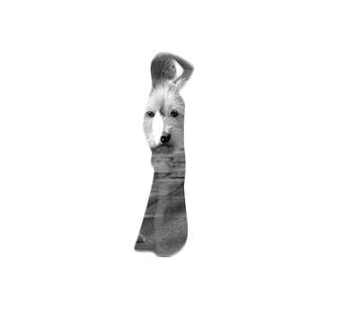

Mixed media artist specializing in motion graphics, typography
animation, and interactive digital experiences that blend
traditional design with modern technology.

Selective Color Series
HDPhotoshop•Photo Edit
Een krachtige fotobewerkingstechniek waarbij specifieke
kleuren worden benadrukt terwijl de rest van de afbeelding in
zwart-wit wordt gehouden.
Over dit project
Dit creëert een dramatisch visueel effect dat de aandacht
trekt naar bepaalde elementen. Door selectief kleuren te
behouden ontstaat er een focus punt in de compositie.
Artistieke Visie
Deze techniek wordt vaak gebruikt in mode- en
portretfotografie om emotie te versterken en een
cinematistische sfeer te creëren.